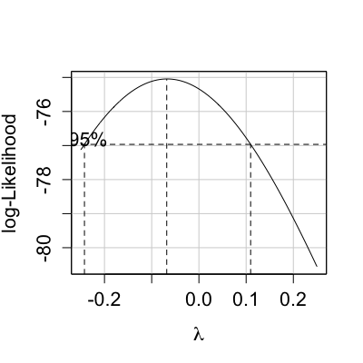
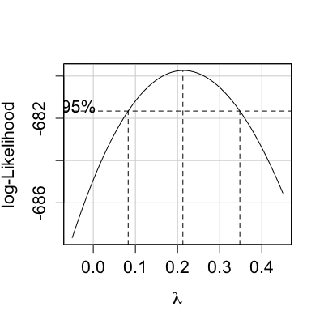

boxCox(object, ...) boxCox(object, lambda = seq(-2, 2, 1/10), plotit = TRUE, interp = (plotit && (m < 100)), eps = 1/50, xlab = expression(lambda), ylab = "log-Likelihood", family = "bcPower", grid = TRUE, ...) boxCox(object, lambda = seq(-2, 2, 1/10), plotit = TRUE, interp = (plotit && (m < 100)), eps = 1/50, xlab = expression(lambda), ylab = "log-Likelihood", family = "bcPower", ...) boxCox(object, lambda = seq(-2, 2, 1/10), plotit = TRUE, interp = (plotit && (m < 100)), eps = 1/50, xlab = expression(lambda), ylab = "log-Likelihood", family = "bcPower", ...)
lm and aov objects are handled.
TRUE.
TRUE if plotting with lambda of length less than 100.
"lambda".
"log-Likelihood".
"bcPower" for the Box-Cox power family of
transformations. If set to "yjPower" the Yeo-Johnson family, which
permits negative responses, is used.
Computes and optionally plots profile log-likelihoods for the parameter of the
Box-Cox power transformation. This is a slight generalization of the
boxcox function in the MASS package that allows for families of transformations
other than the Box-Cox power family.
This routine is an elaboration of the boxcox function in the
MASS package. All arguments except for family and grid are
identical, and if the arguments
family = "bcPower", grid=FALSE is set it gives an identical graph. If
family = "yjPower" then the Yeo-Johnson power transformations, which
allow nonpositive responses, will be used.
A list of the lambda vector and the computed profile log-likelihood vector,
invisibly if the result is plotted. If plotit=TRUE plots log-likelihood vs
lambda and indicates a 95
lambda. If interp=TRUE, spline interpolation is used to give a smoother plot.
Box, G. E. P. and Cox, D. R. (1964) An analysis of transformations. Journal of the Royal Statisistical Society, Series B. 26 211-46.
Cook, R. D. and Weisberg, S. (1999) Applied Regression Including Computing and Graphics. Wiley.
Fox, J. (2008) Applied Regression Analysis and Generalized Linear Models, Second Edition. Sage.
Fox, J. and Weisberg, S. (2011) An R Companion to Applied Regression, Second Edition, Sage.
Weisberg, S. (2005) Applied Linear Regression, Third Edition. Wiley.
Yeo, I. and Johnson, R. (2000) A new family of power transformations to improve normality or symmetry. Biometrika, 87, 954-959.

